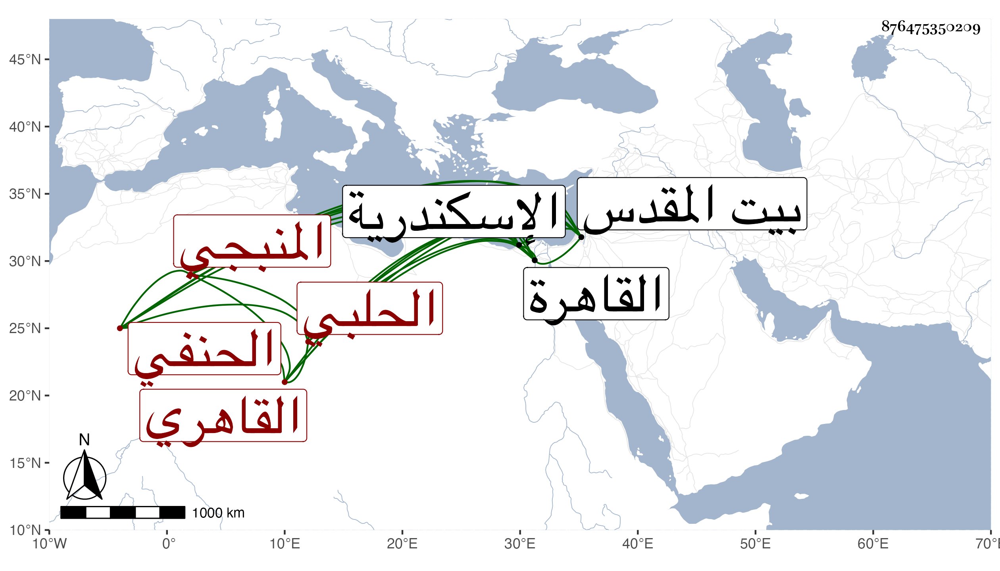

0902Sakhawi.DawLamic.ITO20230111-ara1.EIS1600.876475350209
Biography ID: 876475350209
494
عبد الرزاق بن عبد اللطيف بن محمد بن عبد الكريم بن عبد النور ابن منير بن عبد الكريم بن علي بن عبد الحق بن عبد الصمد بن عبد النور الزين أبو عبد الكريم وعبد اللطيف بن التقي بن التقي بن الحافظ القطب المنبجي الحلبي الأصل القاهري الحنفي الآتي أبوه وابناه ويعرف بالحلبي . ولد في ليلة الرابع والعشرين من رمضان من حدود الثمانين وسبعمائة بالقاهرة ونشأ بها فحفظ القرآن والعمدة والملحة والثلثين من المختار وعرض على جماعة وسمع على عمه القطب عبد الكريم بعض الأجزاء بل أخبرني أنه سمع على التنوخي ورقية وغيرهما وحدث سمع منه الفضلاء قرأت عليه وكان خيرا محبا في الحديث وأهله متعففا قانعا صابرا شاكرا ، حج غير مرة وجاور وكذا زار بيت المقدس مرارا ودخل اسكندرية وتنزل في سعيد السعداء وولي النظر بزاوية الشيخ نصر المنبجي خال جد أبيه الحافظ القطب جوار منزله ، وكف بعد الخمسين فانقطع بمنزله حتى مات في ليلة الجمعة خامس ربيع الثاني سنة ثمان وستين وصلى عليه بعد صلاة الجمعة بجامع الحاكم ودفن بتربتهم المعروفة بالشيخ نصر رحمه الله وإيانا .
